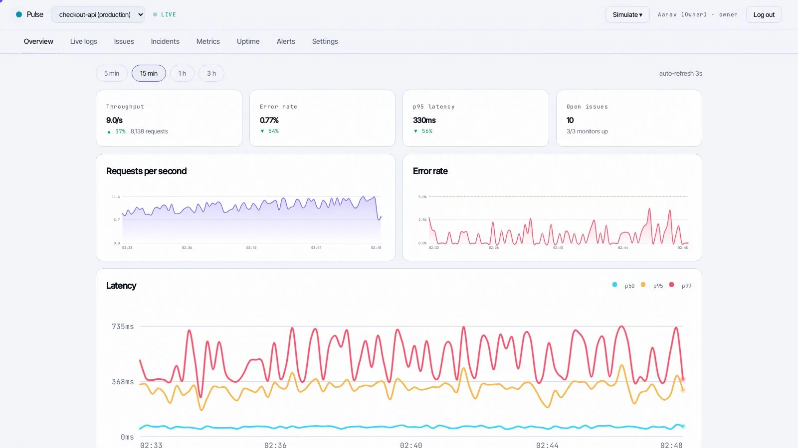
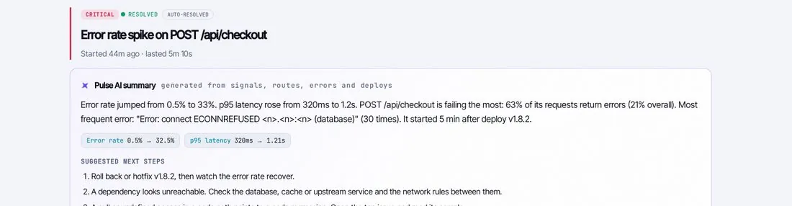
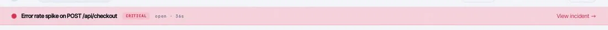
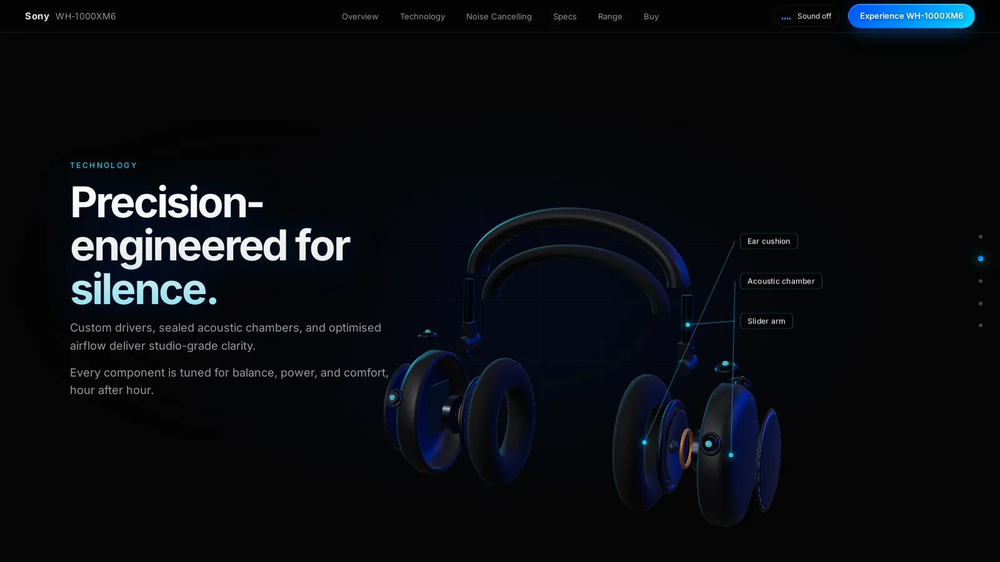
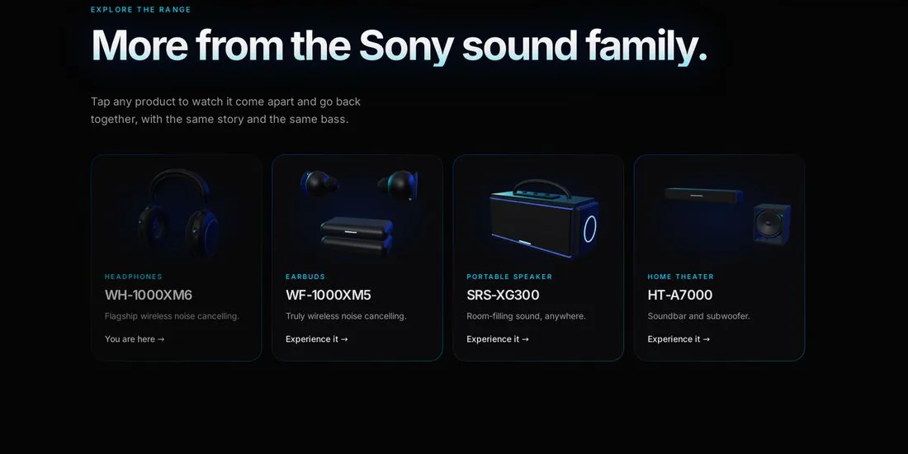
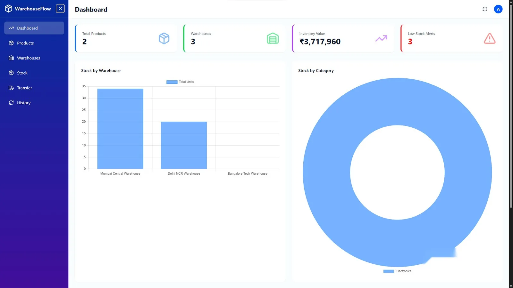
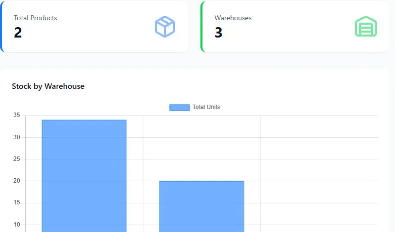
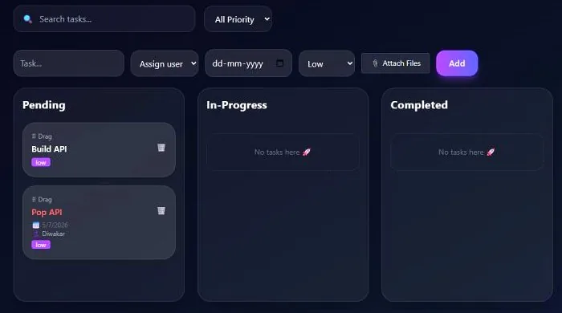
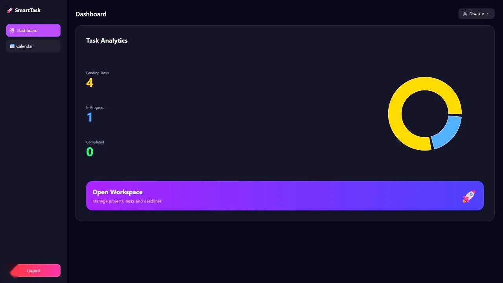

Pulse
Live monitoring with an AI watchdog
Sony Sound Range
Scroll-driven 3D product experience (unofficial concept)
WarehouseFlow
Multi Warehouse Inventory
SmartTask
Smart Task Administration
Full-Stack Developer · Data-Driven Engineer · Agra
RahulDiwakar
I'm Rahul, a full-stack developer from Agra with an analytics background. I design the database first, then build React interfaces that turn data into something people can act on. Five projects built, from inventory and task apps to a monitoring platform with an AI watchdog and a scroll-driven 3D product site, 240+ algorithm problems solved, and a habit of tracing every bug to its root.
The repo.
Every build, one list · click a row to openMore builds
just below ↓
Full-stack web apps
React and Next.js front ends wired to Node and Express back ends.
REST APIs and auth
Secure endpoints, JWT sessions and role-based access control.
SQL and database design
Relational models, advanced joins and indexing that cut report time.
Dashboards and charts
KPI cards, donut and bar charts, Power BI style analytics in the browser.
Deployment
Live apps on Vercel, Render and Aiven with production databases.
Debugging and algorithms
240+ DSA problems solved and a methodical approach to root causes.
The timeline.
BCA
Bachelor of Computer Applications. CGPA 6.50.
Got a spec?
Let's ship it
to production.
diwakarr135@gmail.comDownload resumeGitHub+91 70371 19579